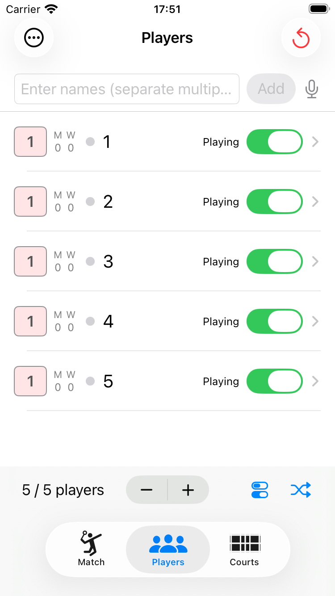
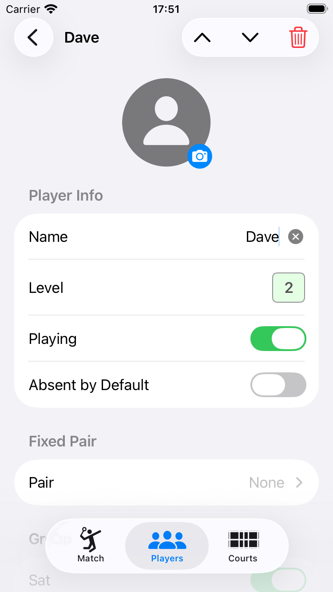
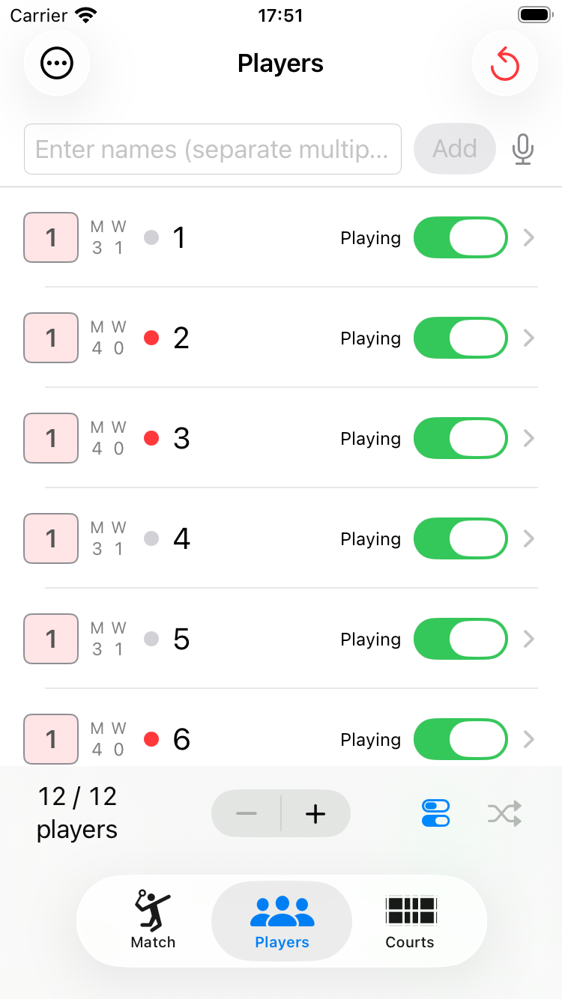
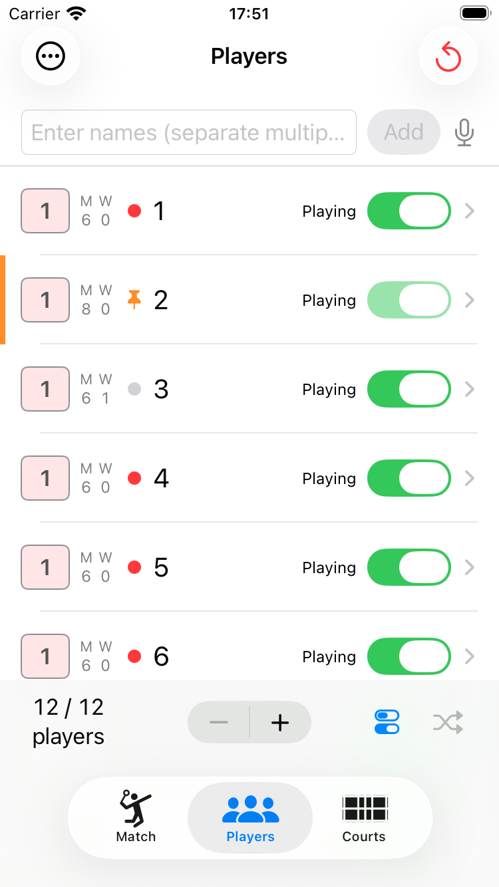
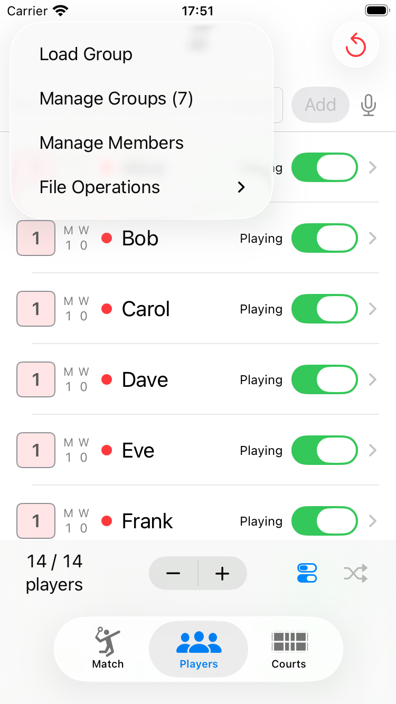
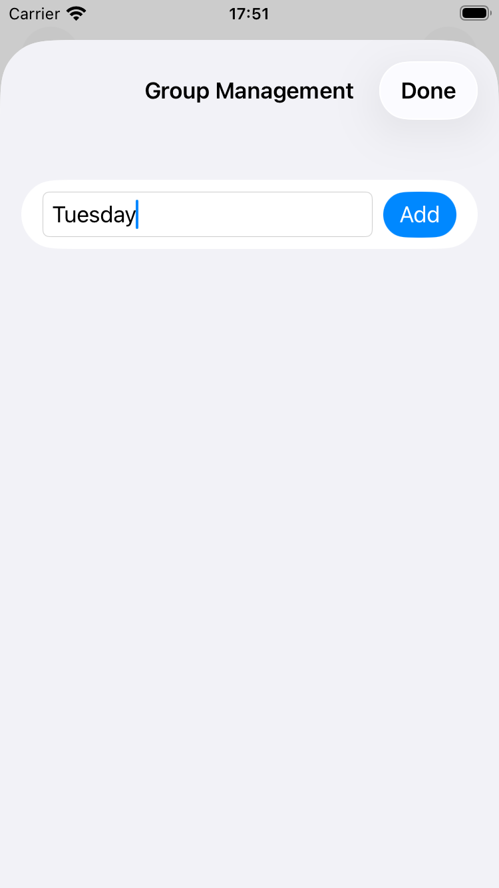
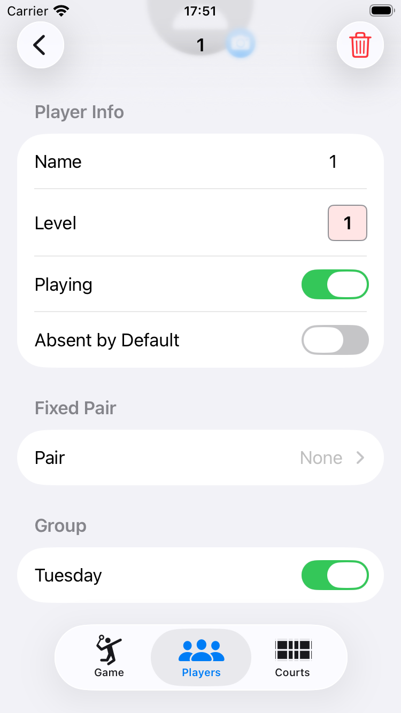
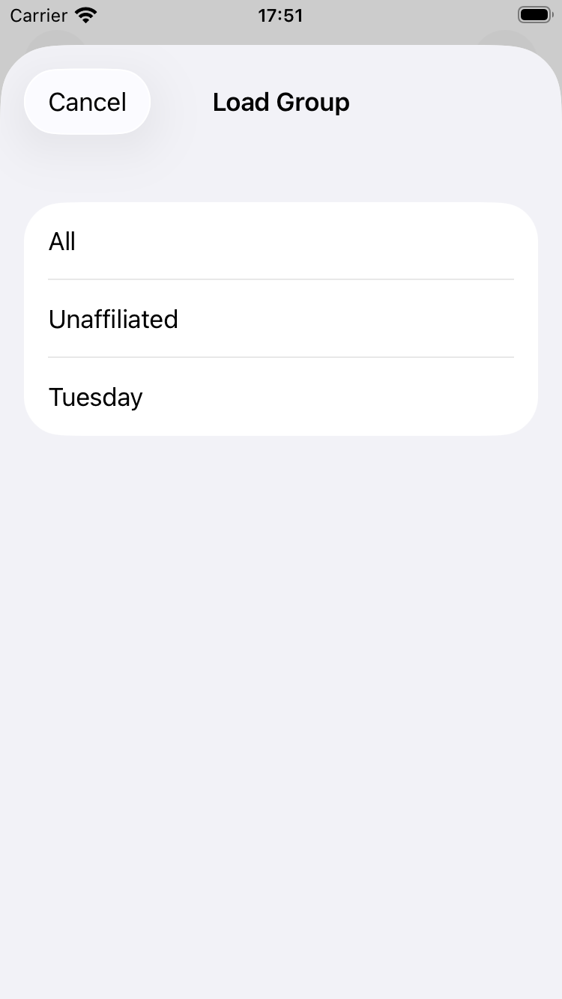

Players タブ下部の ＋ / － ボタンをタップするだけで、プレイヤーの人数を簡単に増減できます。追加されたプレイヤーには、初期状態で「1」「2」「3」…という数字がそのまま名前として割り当てられます。特定の1人だけを削除したい場合は、編集画面右上のゴミ箱アイコン、またはリストで左にスワイプして削除できます。

Add（追加）をタップすると、名前付きでプレイヤーを追加することもできます。カンマ区切りで複数名を一度に入力できます（例：Alice, Bob, Carol, Dave）。マイクアイコンで音声入力も使えます。Players タブでプレイヤーの行をタップすると編集画面が開きます。Player Info（プレイヤー情報）セクションのName（名前）フィールドを編集してください。

各プレイヤーには 1・2・3 のレベルを設定できます。Players タブのリスト左端にあるレベルバッジをタップするたびに 1→2→3→1 と切り替わります。編集画面の Level（レベル）からも変更できます。

レベルはコートへの割り当てに使用されます。詳しくは「高度な使い方」をご覧ください。
毎回欠席することが多いメンバーには、編集画面の Absent by Default（デフォルト欠席）をオンにしておくと、メンバーデータを読み込んだ際に自動的に休憩状態でリストに追加されます。
編集画面の Fixed Pair（固定ペア）セクションから、常に同じペアを組むプレイヤーを指定できます。固定されたペアはプレイヤー名の下に ♥ マーク付きで表示されます。
Players タブのリストで、プレイヤー名の左に丸印が表示されます。赤丸は現在進行中の試合に出場していることを示し、グレーの丸はそれ以外（次の組み合わせ待ちや休憩中など）を示します。
丸印をタップすると、そのプレイヤーはピン留め状態になり、丸印の代わりにピンのアイコンが表示されます。ピン留めされたプレイヤーは、待ち回数に関わらず次の組み合わせで最優先に選ばれます。もう一度ピンのアイコンをタップすると、ピン留めが解除されて丸印表示に戻ります。

Players タブ左上の ⋯ メニューから以下の操作ができます。

メンバーをグループに分類して保存しておくと、曜日や練習会ごとに異なるメンバーをすばやく読み込めます。
グループ名を作成する — ⋯ メニューの Manage Groups（グループ管理）を開き、Group Name（グループ名）フィールドに名前を入力して Add（追加）をタップします。

プレイヤーにグループを設定する — プレイヤー編集画面の Group（グループ）セクションで、そのプレイヤーを所属させたいグループのトグルをオンにします（グループが1つも作成されていない場合、このセクションは表示されません）。

グループを割り当てたら、⋯ メニューの Save（保存）でメンバーデータベースに保存してください。

組み合わせはプレイヤーリストの並び順をもとに決まります。同じメンバーで練習を重ねていると、Game タブの ↩ でゲームを初期化するたびに、毎回同じ組み合わせから始まってしまうことがあります。Players タブ下部のシャッフルアイコン（🔀）をタップすると、プレイヤーの名前・レベル・出場設定などをリスト内でランダムに入れ替え、次の組み合わせの偏りを防げます。
↩ リセットボタンで初期化してください。